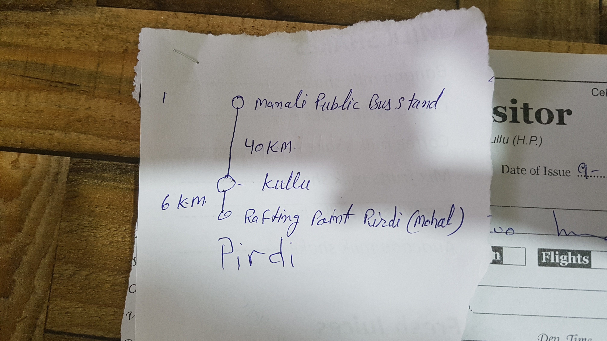

태어나서 처음 겪은 저체온증
2017년 05월 10일
여행 D+37, 인도 D+8 마날리 D+4
>
"곤니찌와?"
"땡!"
"니하오?"
"땡! 왜 계속 틀림? ㅋㅋ 한국인이다"
아침식사를 하러가는길에 누가 반갑게 인사한다. 나보고 처음에 곤니찌와라고 물어본다. 그래서 틀렸다고 하니 니하오라고 묻는다. 그래서 또 틀렸다, 왜 항상 틀리냐, 난 한국인이라고 했다. (서로 겁나웃음) 여기선 누구나 쉽게 인사하고 대화 할수있고 친구가 될수 있다. 그렇기에 관계 속에서 그들의 삶은 즐거워 보인다. 사람을 만나는 일이 두렵지않다. 가볍게 인사할수 있고 가볍게 헤어질 수 있기 때문이다. 내가 많은 나라를 돌아다녀본것은 아니지만 한국만큼 지나치는 사람끼리 서로 인사를 안하는 나라도 없다. 물론 동아시아 문화의 특징이기도 하겠지만.
여행와서 친구가 되는 간단한 패턴을 발견했다. 그냥 아무한테나 헬로우를 때리면 보통 상대방도 웃으면서 헬로우로 답변한다. 그리고 보통 웨얼알유후롬 으로 대화가 진행된다. 정말 대화하기 쉽다. 그러다가 대화가 잘되고하면 그자리에서 친구가 된다. 이렇게 쉽게 친구가 될 수 있는 외국인들의 문화가 부럽다.
어제 같이 동행했던 뉴질랜드인 조쉬는 나한테 뉴질랜드에 한국인 친구가 있냐고 물었다. 그래서 없다고 했다. 그는 뉴질랜드에 한국인이 정말 많아서 한명정도는 있을거라고 생각했다고 한다. 그래서 나도 물었다. 한국인이 그렇게 많으니 한국인 친구가 있느냐고, 그러나 없다고 했다. 한국인들의 커뮤니티는 너무 강해서 그 들 사이로 들어가기 너무 어렵다고 했다.
여행 와서 발견한 한국인 들의 독특한 문화 하나는 오픈 채팅방을 활용해 서로 정보를 공유하고 동행을 구한다는 것이다. 요즘 한국인 여행자들은 보통 다 이렇게 하는것 같다. 이런 한국인 커뮤니티가 물론 안전한 여행을 위해 큰 장점이 있는것은 사실이다. 하지만 나는 동행까지 소개팅 마냥 인위적으로 만나고 싶지 않았다. 내 경험상 동행은 여행지 중간에 자연스럽게 만나게 된다.
이런 한국인의 집단 문화가 분명 장점도 있지만 한국인들 끼리끼리 뭉쳐다니게 하기 때문에 현지인들이나 여행자들 속으로 깊이 있게 들어가기 어렵게 만드는것 같다. (하지만 나도 엊그제 인도여행 오픈채팅방에 가입함)
아침 8시 즘 식사를 할수 있는 식당이 그리 많지 않다. 아까 만난 인도청년이 소개해준 빵집에서 식사를 했다. 누텔라 빵이랑 애플 파이를 먹었다. 여긴 왜 빵도 맛있는거지. 특히 카푸치노가 맛있었다. 식사를 마치고 8시반에 투어회사 앞에서 조쉬와 만나서 출발했다. 시작부터 미션이 주어졌다. 로컬버스를 타고 Pildi라는 지역에가서 top adventure라는 래프팅 회사 찾기. 이 래프팅은 transportation이 포함되어 있지 않은 투어상품이라 직접 보트까지 이동하고 래프팅이 끝난 뒤 알아서 버스를 타고 복귀 해야 한다. 우리는 다소 걱정을 하며 뉴마날리에있는 로컬버스 정류장으로 향했다.
 투어회사 주인이 우리에게 준 미션. Pirdi 찾아가기. 스펠링이 햇갈린다고 조쉬가 아래에 Pirdi 라고 다시썼는데, 다 큰애가 글씨를 정말 못써서 웃겼음.
정류장까지 이런저런 대화를 하며 갔다. 주로 한국 문화에대해 이야기했다. 예전엔 영어로 말하기 어려우니 주로 듣는 입장이었다면, 이제는 뒤죽박죽 이더라도 그냥 막 말해도 된다는 사실을 깨달았기 때문에 하는 말이 점점 많아진다. 확실히 여행 한달사이에 스피킹이 많이 늘었다는 생각이 든다. 외국인 앞에서 하고 싶은말의 영어 단어가 기억이 나지않아서 어버버하던 시절이 생각난다. 지금은 초등학생이 사용할 단어정도를 대충 이어붙여서 내밷는정도는 되는것 같다. 그래도 대충 대화가 다 됨.
정류장에 도착했는데 정류장이 꽤 커서 살짝 막막했지만 몇몇 사람들에게 물어보기로 했다. 조쉬 녀석은 8년동안 8번이나 인도에 왔다고 하면서 이렇게 물어보고 길찾는걸 잘 못하는것 같다. 한명에게 물어봤더니 자기도 여기 처음온 여행자라며 다른사람에게 물어보라고 한다. 주위를 둘러보다가 버스앞에서 사람들에게 떠드는 사람에게 물어봤더니 이 차가 바로 Pirdi로 가는 차라고 한다. 생각보다 쉽게 미션의 첫번재 목표를 달성했다. 로컬버스에 대한 막연한 어려움이 있었는데 생각보다 어렵지 않다. 그냥 아무나 붙잡고 목적지 + 버스? 이러면 다 알려준다.
약 한시간 반동안의 로컬버스 이동. 확실히 동행이 있고 대화를 하면서 가니 지루하지 않다. 현지인들 투성이인 로컬버스를 타고 가면서 느낀것은 인도가 생각보다 위험하지 않다는 것이었다. 막연히 인도는 위험한 여행지라는 고정관념이 막상와보니 또 깨졌다. 4년전 남미도 그랬다. 물론 여행자는 항상 긴장의 끈을 놓쳐서는 안되지만 그렇다고 지나치게 경계하고 도전을 포기할 필요는 없다. 한국인에게는 인도하면 위험한 나라지만 조쉬네 나라에선 인도하면 여행하기 편하고 사람들은 착하고 친절한 나라라고 한다! 그래서 인도만 8번 왔다고 한다. 이렇게 각 문화권이 느끼는 고정관념은 서로 다른가보다. 그동안 내가 틀렸다는걸 최대한 많이 깨닫는것이 중요하다는 생각이 들었다. 그동안 내가 가졌던 고정관념들을 여행중에 다양한 문화와 사람들을 통해 하나하나 부시고 고쳐나가면 좋겠다.
 중간에 버스를 한번 갈아탔는데 버스앞에 변속기 부품이 널부러져 있었다. 이 버스는 변속기가 없는걸까? (설마 그럴리 없겠지만) 우리는 역시 어메이징 인디아 라고 농담을 주고받으며 다시 출발했다.
중간에 버스를 한번 갈아탔는데 버스앞에 변속기 부품이 널부러져 있었다. 이 버스는 변속기가 없는걸까? (설마 그럴리 없겠지만) 우리는 역시 어메이징 인디아 라고 농담을 주고받으며 다시 출발했다.
길고 구불구불한 길이었지만 생각보다 금방 도착했다. 다행이 버스에 있던 아저씨가 Pirdi에 도착했을때 목적지에 왔다며 내리라고 해줘서 쉽게 내릴 수 있었다. 바로 앞에 레프팅 사무실이 있길래 Top adventure냐고 물었더니 저쪽으로 가라한다. 저쪽으로 갔더니 있었다. 어렵게만 느껴졌던 미션이 그냥 쓱 해결되었다.
드디어 래프팅 시작. 히말라야 계속에서 래프팅을 하는 기분은 어떨까. 나는 무척신이났다. 어제 비도 와서 물도 많겠다. 오늘 날씨도 구름한점 없이 쨍쨍하다. 래프팅하기에는 최적의 날씨였다. (썬크림을 모르고 안가져온것만 함정..) 가이드에게 간단한 설명을 듣고 노를 잡고 바로 출발했다. 근데 물이 너무 찼다. 어제 분명히 투어 회사 사장이 따듯한 물이라고 했는데 겁나 차가운 물이었다. 시작부터 너무 깜짝놀랐다. 나는 미지근한 물을 기대했는데 이렇게 차가울줄몰라서 미쳐 몸이 대비하지 못했던것 같다.
물론 파도를타고 강을따라 내려가는것은 즐겁긴 했는데 물이 너무 차가워서 그 즐거움이 반으로 줄었다. 시간이 지날수록 그 고통은 점점 심해졌다. 물이 튈때마다 너무 차가워서 힘들었음. 한 1/3 지점까지는 재밌었는데 그 이후부터는 추워서 그저 그랬고 마지막 2/3 지점부터는 빨리 끝났으면 했다.
겁나 차가웠던 히말라야의 강물. 가뜩이나 맨앞에 앉아서 파도를 많이 맞았다. 얼음장같은 파도를 맞을때마다 돌아버리는줄 알았음.
끝나기만을 기다렸던 레프팅이 종료되어 나왔는데, 손과 발의 감각이 없고 몸이 잘 움직여지지 않았다. 같이 배를 탄 다른 5명은 모두 괜찮았는데 나만 그랬다. 태어나서 처음으로 저체온증 증상을 겪었다. 한 두시간동안 손발에 감각이 없었다. 몸이 너무 추웠다. 조쉬는 내가 뻥치고 오바하는줄 알고 계속 대수롭게 생각하지 않았다. 근데 나는 진짜 심각했다. 나는 몸을 아주 사리는 사람이기때문에 이상이 생기면 어쩌나 걱정을 많이했다.
출발점으로 돌아온 나는 바로 챙겨온 두툼한 옷을 모두 입었다. (반팔+긴팔+후리스+고어텍스자켓) 햇빛에 달궈져 돌바닥이 뜨거웠기 때문에 여행와서 처음으로 맨발로 지저분한 땅을 딛었다. 다들 더워서 반팔 반바지만 입고 있다. 근데 나는 이렇게 껴입어도 하나도 안더웠다. 다시 버스를 타고 돌아가는 길에도 전혀 덥지 않았다. 확실히 저체온 증상이 맞는것 같다.
다시 뉴마날리에 도착했다. 몸이 맛이 가서그런지 정말 길고 길었던 시간이었다. 어제 먹었던 길거리 음식이 너무 훌륭해서 그런지 조쉬가 길거리음식을 먹고 싶다고 해서 가게에 들려서 먹엇다. 어제 봤던 음식을 발견했다. 이름은 알루티키 aloo tikki 어제 먹었던게 더 맛있었지만 훌륭한 인도 길거리 음식인것 같다. 가기전에 또 먹어야겠다.
올드 마날리로 올라오는 길. 내일 할 canyoning 투어를 예약하러 갔다가 캐년닝투어가 폭포속으로 들어가는거라는 사실을 알게되었다. 오늘 추워서 개고생했는데 내일 또 해야한다니.... 여기까지 조쉬를 데리고 왔는데 안한다고 할수가 없었다. 글고 스쿠버용 방한옷을 준다길래 일단 해보기로 했다. 낼 진짜 걱정된다.
오늘은 피곤해서 같이 저녁먹을 힘이 없었다. 투어회사에있던 아저씨가 어떤 음식을 시켰는데 너무 맛있어 보였다. 티벳음식 땜뚝이라고 한다. 그래서 나도 그걸 먹고 숙소로 돌아가기로 했다. Raj라는 음식점인데 한국어로 메뉴가 되어있었다. 땜뚝은 한국어로 수제비라고 써있었다. 티벳음식과 우리나라 음식 문화가 비슷한가 보다.
오늘 먹었던 땜뚝. 내 인생 최고의 수제비를 먹었다. 한국 수제비맛과는 약간 달랐는데 훨씬 맛있었다.
돌아와서 어제 사놓은 파파야를 먹었다. 인생 첫 파파야였는데 생각보다 달지는 않았다. 옆방에 있던 캐나다 아저씨가 나와서 내 옆에 앉았다. 같이 간단히 대화했는데 은퇴후 국가에사 주는 연금으로 여행중이라고 한다. (개부럽..ㄷㄷ) 오늘 일기 끝!